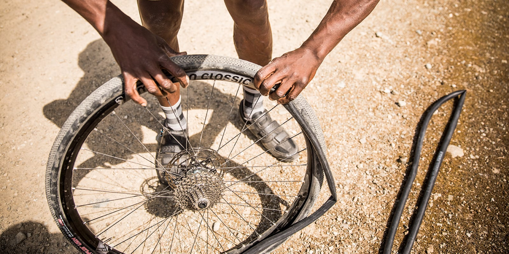

In this website you will learn how to fix your own bike if it break.It's going to be about bike lesson.I made this so people can save money by not going to the bike shop. you only need to buy bike tools. Most of my skills i learn it from my father, he thought me a lot and I like to spread what I learn from my dad to other people so they can use it

Remove (or Plug) the Tire Normally, your first job in the event of a flat is to remove the tire so you can assess the problem inside. But for riders with tubeless setups—all but standard in mountain biking, and becoming increasingly popular on gravel, cyclocross, and even some road bikes—you can often stop air loss with a tire plug. These kits come with a small strip of rubber and an insertion device, which allow you plug the hole without changing any hardware. Once you spot the hole and insert the rubber plug, re-inflate your tire to the appropriate pressure and check to see if it’s holding air. If so, start riding again, and check the repair every so often to make sure it’s holding fast.
Are you wearing nice clothes that you care about? Probably best to lock your bike and take the bus. Come back later with your old jeans and fix it then. Fixing a chain is the dirtiest job there is on a bike. ake a look at the two broken ends. You’ll need to remove two segments of the chain because the two types of segment alternate. If you just remove one segment, you can’t reattach it. Place the chain into the groove in the chain tool at the spot you want to disconnect. If you are replacing a worn but non-broken chain, you’ll do the same thing here
1.Check your brake pads before you make any adjustments. 2.Squeeze the brake lever to see where the pads hit the rim. 3.Use an Allen wrench to loosen the bolts holding the brake pads in place. 4.Move the brake pads up or down in the brake pad holder. 5.Re-tighten the brake pad bolts with the Allen wrench.

Credits: Smith, John. “Image Stand In” Flickr. Yahoo! Web. 7 Apr. 2011
Credits:Philip, M."https://www.pexels.com"